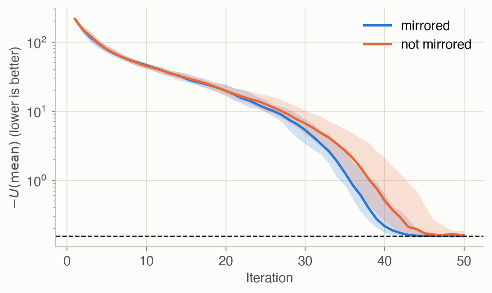
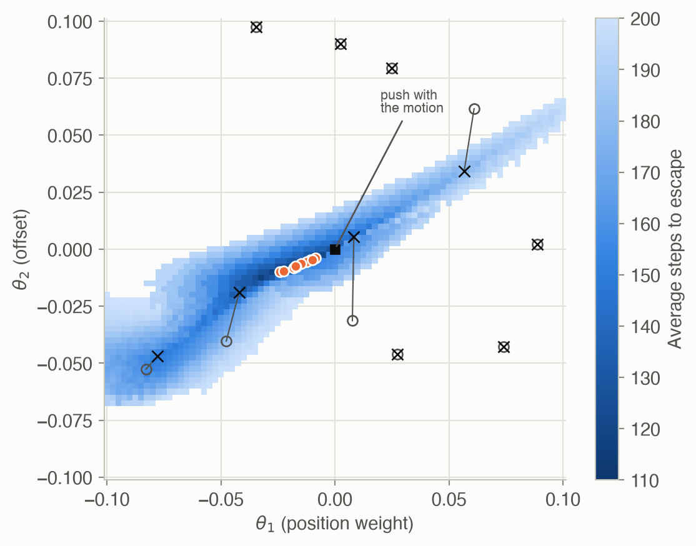

10 · Policy Search
Part II — Sequential Problems
Big picture
Where this chapter fits
Chapters 7–9 chose actions through value functions: compute how good each state is, then act greedily. This chapter starts a different approach, policy search, which runs through Chapters 10–13. Pick a family of policies described by parameters \(\theta\), such as the weights of a controller, a few thresholds, or a neural network. Then adjust \(\theta\) directly to maximize the expected return, without ever computing a value function. Often a good policy is much simpler than the value function it implies. For example, “push in the direction you’re moving” nearly solves mountain car, whose value function (Chapter 8) is a complicated spiral. This chapter treats the expected return as a black box and searches without gradients. Chapter 11 estimates gradients, Chapter 12 uses them, and Chapter 13 combines policies with value functions again.
The question: how do you improve a policy when all you can do is try it out and measure how well it did?
The short answer: estimate the policy’s value by simulating it, then search the parameter space like any other noisy optimization problem. You can search locally from one point, evolve a population, or move a whole search distribution toward better regions.
The key ideas at a glance
A policy is a point in parameter space, and its score is noisy. Write the policy as \(\pi_\theta\) and its value as \(U(\theta)\): the expected discounted return from the initial state distribution. You rarely have a formula, so estimate it by running \(m\) simulated episodes (rollouts) and averaging their returns: Monte Carlo policy evaluation. The estimate is unbiased, but noisy. Its standard deviation shrinks like \(1/\sqrt{m}\), so halving the noise costs four times the simulation.
Local search: step, compare, shrink. The Hooke–Jeeves method tries a step of \(\pm\alpha\) along each parameter, moves to the best improvement, and halves (or otherwise shrinks) the step when nothing improves. It’s simple and cheap, but it can get stuck: on flat regions, at local optima, or when a lucky noisy estimate makes the current point look better than it is.
Populations: keep many candidates. A genetic algorithm evaluates a population of parameter vectors, keeps the best few (the elites), and breeds the next generation by adding random noise to copies of them. Spreading out makes it much harder to get stranded.
Search distributions: move a cloud. The cross entropy method (CEM) samples parameters from a Gaussian, keeps the elites, and refits the Gaussian to them. The cloud shifts and shrinks toward good regions. If it shrinks faster than it moves, it freezes before reaching the optimum, so it needs enough samples.
Evolution strategies: a gradient without derivatives. Evolution strategies (ES) treat the search distribution’s parameters \(\psi\) as what’s being optimized. They compute the gradient of the expected score under that distribution from samples alone, with the log-derivative trick. Rank shaping replaces raw scores by weights based on each sample’s rank. Isotropic ES fixes the spread and uses mirrored sampling: each random perturbation is paired with its negative, which cancels much of the noise.
The landscape decides which method works. Real objectives are noisy, have plateaus (every nearby policy fails in the same way), and have local optima. Populations and distributions cope better than single-point search, and averaging over a search distribution also smooths a jagged objective. None of these methods needs gradients, the model’s equations, or even differentiable policies.
Vocabulary
| Term | Plain meaning |
|---|---|
| Parameterized policy \(\pi_\theta\) | A policy described by a vector of numbers \(\theta\) |
| \(U(\theta)\) | Expected discounted return of \(\pi_\theta\) from the initial state distribution |
| Rollout, trajectory \(\tau\) | One simulated episode, and its sequence of states, actions and rewards |
| Monte Carlo policy evaluation | Estimate \(U(\theta)\) by averaging the returns of \(m\) rollouts |
| Hooke–Jeeves | Coordinate-wise local search with a shrinking step size |
| Population, elite samples | A set of candidate \(\theta\)s; the best few of them |
| Search distribution \(p(\theta \mid \psi)\) | A distribution over policy parameters, with its own parameters \(\psi\) |
| Cross entropy method | Refit the search distribution to the elite samples |
| Log-derivative trick | \(\nabla p = p\, \nabla \log p\): turns a gradient of an expectation into an expectation |
| Rank shaping | Use weights based on each sample’s rank instead of its raw score |
| Mirrored sampling | Evaluate both \(\psi + \sigma\epsilon\) and \(\psi - \sigma\epsilon\) |
After this chapter you can
- Estimate a policy’s value by Monte Carlo rollouts, and say how its noise shrinks with the number of rollouts.
- Run Hooke–Jeeves, a genetic algorithm, the cross entropy method and evolution strategies on a policy.
- Derive the search gradient with the log-derivative trick, and explain rank shaping and mirrored sampling.
- Predict how noise, plateaus and local optima affect each method, and pick one accordingly.
Intuition
TipAnalogy
Tuning a recipe without knowing any chemistry: you can only cook it and taste. Each tasting is a bit unreliable, because your palate varies, so you might cook each version a few times and average. Then:
- Local search: tweak one ingredient at a time, keep a tweak if it tastes better, and make smaller tweaks when nothing helps.
- Genetic algorithm: a cooking class where everyone cooks a variant, the best few recipes are copied with small random changes, and the class repeats.
- Cross entropy: keep a “zone” of promising amounts, sample recipes from it, and redraw the zone around the best ones.
- Evolution strategies: from the tasting results, work out which direction of change tends to help, and move the zone that way.
Two problems run through the page.
- The simple regulator (a benchmark problem from the book’s appendix): keep a number \(s\) near 0. Each step you add an action \(a\), and nature adds noise: \(s' = s + a + \text{noise}\). The reward is \(-s^2\). The policy family is \(a \sim \mathcal{N}(\theta_1 s, \theta_2^2)\): \(\theta_1\) is a gain on the state, and \(\theta_2\) is how much random noise the policy adds to its own action. The best policy is obviously \(\theta_1 = -1\) (cancel \(s\)) and \(\theta_2 = 0\) (add no noise). That’s what makes it a good test: we can check whether each method finds it. For this family we can even compute \(U(\theta)\) exactly, so every result can be scored without noise.
- Mountain car (Chapter 8), with the rule “accelerate right if \(v + \theta_1 x + \theta_2 > 0\), else left”. This landscape is much harsher.
Scoring a policy by simulation
At \(\theta = (-0.5, 0.5)\) the exact value is -1.940. One rollout’s return can be far from this, because a single episode is noisy. The average of \(m\) rollouts has a spread that shrinks like \(1/\sqrt{m}\): 100 rollouts are 10 times less noisy than 1 (Figure 2, right). See Equation 2.
Local search and noise
Hooke–Jeeves on the regulator, from \(\theta = (0, 1)\) with 30 rollouts per evaluation, ends at a median value of -0.163 (the optimum is -0.155). With only 3 rollouts per evaluation, the median is -0.182, and the worst of 20 runs -0.251. The noise is the problem. A lucky, too-good estimate at the current point makes every true improvement look worse, so the search shrinks its step and stops early. See Equation 3.
Populations and plateaus
On mountain car, only 18% of the parameter square we search ever gets the car out. Everywhere else, every nearby policy fails in the same way, scoring the capped 201 steps (Figure 7). Local search started at random points escapes this plateau in only 40% of 10 tries, because when all its neighbors tie, it just shrinks its step. Started from the “push with the motion” rule, it does much better. That rule averages 152.8 steps (every car gets out, but two need just over 200 steps and count as 201), and local search improves it to 111.9. A genetic algorithm with 20 candidates per generation finds a working policy in every run, averaging 113.7 steps. See Equation 4.
A cloud that can freeze
The cross entropy method refits its Gaussian to the best 20% of samples each round. With 25 samples, the cloud shrinks faster than it travels, and only 15% of 20 runs end within 0.01 of the optimal value. With 200 samples, 90% do (Figure 5, and the explorer below). See Equation 6.
Mirrored sampling
Isotropic evolution strategies estimate which direction improves the score from random perturbations. Pairing each perturbation \(\epsilon\) with \(-\epsilon\) cancels the part of the estimate that comes from the score’s overall level rather than its slope, which is pure noise (Problem 5). With the same budget of 10 evaluations per step, 100% of runs end within 0.01 of the optimum with mirroring, and 75% without (Figure 6). See Equation 9.
![Two panels. The left is a heat map over theta 1 from minus 2.5 to 1 and theta 2 from minus 0.5 to 3.5. It is darkest along a horizontal band near theta 2 equals 0, from theta 1 of about minus 2 to 0.3, deepest at a white star at (minus 1, 0), and pale above the band and to the far left and right, where the gain amplifies the state. The right plots Monte Carlo estimates against the number of rollouts on a log axis from 1 to 1,000: a shaded band around the exact value (a dashed line at about minus 1.94), spanning roughly minus 4.2 to minus 0.7 at 1 rollout and narrowing steadily to a thin sliver at 1,000.](ch10-policy-search_files/figure-html/fig-evaluation-output-1.png)
Formalism
Policy value and Monte Carlo evaluation
For a policy \(\pi\) and an initial state distribution \(b\) (ADM §10.1):
\[ U(\pi) = \sum_s b(s)\, U^\pi(s) = \mathbb{E}_{\tau \sim p_\pi}\big[R(\tau)\big] \tag{1}\]
In words. A policy’s value is its expected return: averaged over where you start, or equivalently over all trajectories the policy can produce.
Term by term.
- \(U^\pi(s)\) is the value of following \(\pi\) from state \(s\) (Chapter 7).
- \(\tau\) is a trajectory (states, actions, rewards), \(p_\pi(\tau)\) its probability under \(\pi\) from \(b\), and \(R(\tau) = \sum_t \gamma^{t-1} r_t\) its discounted return.
- For a parameterized policy, write \(U(\theta) = U(\pi_\theta)\).
\[ U(\theta) \approx \hat U(\theta) = \frac{1}{m} \sum_{i=1}^m R\big(\tau^{(i)}\big), \qquad \operatorname{Var}\big[\hat U(\theta)\big] = \frac{\operatorname{Var}\big[R(\tau)\big]}{m} \tag{2}\]
In words. Run the policy \(m\) times and average the returns. The average is unbiased, and its variance falls in proportion to \(1/m\).
Term by term. Each \(\tau^{(i)}\) is an independent rollout of \(\pi_\theta\) from a start drawn from \(b\), simulated to a depth \(d\). The standard error is \(\sqrt{\operatorname{Var}[R]/m}\).
Why it holds. The mean of independent draws has the same expectation as one draw. Variances of independent terms add, and scaling by \(1/m\) divides the variance by \(m^2\), giving \(m \operatorname{Var}[R]/m^2\).
Local search (Hooke–Jeeves)
From the current \(\theta\), with step size \(\alpha\) (ADM §10.2; R. Hooke and T. Jeeves, Journal of the ACM, 1961):
\[ \theta \leftarrow \mathop{\mathrm{arg\,max}}_{\theta' \in \{\theta\} \cup \{\theta \pm \alpha e_i\}_{i=1}^n} U(\theta'), \qquad \alpha \leftarrow c\,\alpha \ \text{ if } \theta \text{ didn't change} \tag{3}\]
In words. Look at the \(2n\) neighbors one step away along each axis. Move to the best if it beats the current point; otherwise shrink the step by a factor \(c < 1\). Stop when \(\alpha < \epsilon\).
Term by term. \(e_i\) is the unit vector along parameter \(i\). Each iteration costs \(2n\) evaluations. The search needs no gradients but only finds a local optimum, and with noisy \(U\) it compares noisy numbers.
Genetic algorithm
With a population \(\theta^{(1)}, \ldots, \theta^{(m)}\) (ADM §10.3; this is the mutation-only form used by F. Such et al., “Deep Neuroevolution,” 2017):
\[ \theta^{(i)}_{\text{new}} = \theta_{\text{elite}}^{(j_i)} + \sigma \epsilon^{(i)}, \qquad j_i \sim \text{Uniform}\{1, \ldots, m_{\text{elite}}\},\ \ \epsilon^{(i)} \sim \mathcal{N}(0, I) \tag{4}\]
In words. Rank everyone, keep the \(m_{\text{elite}}\) best, and make \(m - 1\) children, each a random elite plus Gaussian noise. Carry the single best over unchanged.
Term by term. \(\sigma\) is the mutation size. Evaluations are independent, so they can run in parallel. Classical genetic algorithms also use crossover, mixing two parents’ parameters.
Cross entropy method
Search over a distribution \(p(\theta \mid \psi)\), such as a Gaussian with \(\psi = (\mu, \Sigma)\) (ADM §10.4; S. Mannor, R. Rubinstein and Y. Gat, ICML, 2003). The goal is:
\[ \psi^* = \mathop{\mathrm{arg\,max}}_\psi \ \mathbb{E}_{\theta \sim p(\cdot \mid \psi)}\big[U(\theta)\big] \tag{5}\]
In words. Find the distribution whose samples are good on average. Once it concentrates on one point, that point is the answer.
The cross entropy method does this without gradients:
\[ \mu \leftarrow \frac{1}{m_{\text{elite}}} \sum_{i \in \text{elite}} \theta^{(i)}, \qquad \Sigma \leftarrow \frac{1}{m_{\text{elite}}} \sum_{i \in \text{elite}} \big(\theta^{(i)} - \mu\big)\big(\theta^{(i)} - \mu\big)^\top \tag{6}\]
In words. Sample \(m\) parameter vectors, keep the best \(m_{\text{elite}}\), and refit the Gaussian to them by maximum likelihood (Chapter 4).
Term by term. The new \(\mu\) is the elites’ mean, and the new \(\Sigma\) their spread. Keeping only the top fraction shrinks \(\Sigma\) each round. If it shrinks before \(\mu\) reaches the optimum, the search stalls: premature convergence. More samples, a larger elite fraction, or added noise slow the collapse.
Evolution strategies
Instead of refitting, take a gradient step on Equation 5. The gradient can be estimated from samples (ADM §10.5; D. Wierstra et al., “Natural Evolution Strategies,” JMLR, 2014):
\[ \nabla_\psi\, \mathbb{E}_{\theta \sim p(\cdot\mid\psi)}\big[U(\theta)\big] = \mathbb{E}_{\theta \sim p(\cdot\mid\psi)}\big[U(\theta)\, \nabla_\psi \log p(\theta \mid \psi)\big] \approx \sum_{i=1}^m w^{(i)}\, \nabla_\psi \log p\big(\theta^{(i)} \mid \psi\big) \tag{7}\]
In words. To improve the distribution, push up the probability of samples that scored well and push down those that scored badly. Each sample’s push is the direction that increases its own log-probability, weighted by how good it was.
Term by term.
- \(\nabla_\psi \log p(\theta \mid \psi)\) is the score of a sample. For a Gaussian mean, it’s \(\Sigma^{-1}(\theta - \mu)\): toward the sample.
- In the sampled version, \(w^{(i)}\) replaces \(U(\theta^{(i)})/m\) with a rank-shaped weight: only the order of the samples matters, so one huge outlier can’t dominate.
Why it holds. Write the expectation as \(\int U(\theta)\, p(\theta \mid \psi)\, d\theta\) and move the gradient inside. Then use \(\nabla p = p\, \nabla \log p\) (the log-derivative trick) to turn the integral back into an expectation you can estimate by sampling. The same trick powers the policy gradient of Chapter 11.
A common weighting scheme (N. Hansen and A. Ostermeier, 1996), for the \(i\)-th best of \(m\) samples:
\[ w^{(i)} = \frac{\max\big(0,\ \log(\tfrac{m}{2} + 1) - \log i\big)}{\sum_{j=1}^m \max\big(0,\ \log(\tfrac{m}{2} + 1) - \log j\big)} - \frac{1}{m} \tag{8}\]
In words. The better half of the samples get positive weights that fall off with rank, and everyone pays the same \(1/m\), so the weights sum to zero.
Term by term. Because the weights sum to zero, adding a constant to every score changes nothing. The gradient only compares samples with each other.
Natural gradient. For a Gaussian with standard deviations \(\sigma_j\), the raw gradient with respect to the mean is \(\sum_i w^{(i)} \epsilon^{(i)} / \sigma\). It grows as \(\sigma\) shrinks, so plain gradient steps blow up just as the search is converging. Rescaling each component by the inverse Fisher information (the natural gradient) gives steps of \(\alpha\, \sigma \sum_i w^{(i)} \epsilon^{(i)}\) for the mean and \(\tfrac{\alpha}{2}\sum_i w^{(i)} (\epsilon^{(i)2} - 1)\) for \(\log \sigma\). These stay proportional to the current spread. The code on this page does this. Without it, the step sizes that work here made the search diverge.
Isotropic evolution strategies
Fix the search distribution to \(\mathcal{N}(\psi, \sigma^2 I)\) and learn only its mean (ADM §10.6; T. Salimans et al., “Evolution Strategies as a Scalable Alternative to Reinforcement Learning,” 2017). With \(\theta = \psi + \sigma\epsilon\):
\[ \nabla_\psi\, \mathbb{E}\big[U(\theta)\big] = \frac{1}{\sigma}\, \mathbb{E}_{\epsilon \sim \mathcal{N}(0, I)}\big[U(\psi + \sigma \epsilon)\, \epsilon\big] \approx \frac{1}{\sigma} \sum_{i=1}^m w^{(i)} \epsilon^{(i)} \tag{9}\]
In words. Perturb the parameters in random directions, and move toward the directions that scored well.
Term by term. For \(\mathcal{N}(\psi, \sigma^2 I)\), \(\nabla_\psi \log p = (\theta - \psi)/\sigma^2 = \epsilon/\sigma\), which gives the formula. With mirrored sampling, the \(m\) perturbations come in pairs \(\pm\epsilon\) (D. Brockhoff et al., 2010). For a locally linear \(U\), each pair’s contribution depends only on the slope, not on where along the line you sampled, so the estimate is much less noisy.
Worked example
Monte Carlo evaluation by hand
Three rollouts of the regulator policy \(\theta = (-0.5, 0.5)\):
| Rollout | Discounted return |
|---|---|
| 1 | -2.423 |
| 2 | -2.008 |
| 3 | -0.550 |
| Average | -1.660 |
The exact value is -1.940, so this 3-rollout estimate is off by 0.279. The returns vary from rollout to rollout because both the environment and this policy are random.
One Hooke–Jeeves iteration by hand
From \(\theta = (0, 1)\) with \(\alpha = 0.75\), using exact values:
| Point | \(\theta_1\) | \(\theta_2\) | \(U(\theta)\) |
|---|---|---|---|
| current | 0.00 | 1.00 | -24.640 |
| \(\theta - 0.75\, e_1\) | -0.75 | 1.00 | -5.981 |
| \(\theta + 0.75\, e_1\) | 0.75 | 1.00 | -8492.891 |
| \(\theta - 0.75\, e_2\) | 0.00 | 0.25 | -2.373 |
| \(\theta + 0.75\, e_2\) | 0.00 | 1.75 | -73.627 |
Lowering the gain to \(\theta_1 = -0.75\) helps most: the policy now pushes the state back toward 0. The next iteration starts from there.
One cross entropy update by hand (one parameter)
Six samples of a single parameter and their scores: \(\theta = 0.2, 1.4, -0.3, 0.9, 1.1, -1.0\) with \(U = -3.2, -0.5, -4.1, -0.9, -0.2, -6.0\). Keep the \(m_{\text{elite}} = 2\) best: \(1.1\) (score \(-0.2\)) and \(1.4\) (score \(-0.5\)). The refitted Gaussian has mean \(1.25\) and variance \(\tfrac{1}{2}\big((1.1 - 1.25)^2 + (1.4 - 1.25)^2\big) = 0.0225\), a standard deviation of \(0.15\). The spread went from about \(0.9\) to \(0.15\) in one step. That’s how fast a small elite set shrinks the search.
Interactive
Watch the cross entropy method (and when it freezes)
Choose how many samples the cross entropy method draws per iteration (it always keeps the best 20%) and scrub through the iterations on the regulator. Gray dots are samples, orange ones the elites, and the blue ellipse covers two standard deviations of the search distribution. The white star is the optimum. With few samples, the ellipse often collapses to a point before reaching the star.
Search a mountain car policy by hand
Set the two parameters of the rule “accelerate right if \(v + \theta_1 x + \theta_2 > 0\)” and watch ten cars (starting at rest between \(x = -0.6\) and \(-0.4\)) try to escape. The map shows the average number of steps for every parameter pair. The white area is the plateau where no car escapes within 200 steps, and your policy is the orange dot. Try to find the narrow diagonal ridge of good policies, and notice how little changes as you move around on the plateau.
Algorithms & code
Monte Carlo evaluation of the regulator
def step(s, a, rng):
"""Sample the next state; the reward -s^2 depends on the current one."""
s = np.asarray(s, dtype=float)
return s + a + NOISE_SD * rng.standard_normal(s.shape), -s**2
def gaussian_policy(theta, s, rng):
"""a ~ N(theta_1 s, theta_2^2): a gain on the state plus action noise.
|theta_2| + 1e-5 keeps the standard deviation positive."""
s = np.asarray(s, dtype=float)
sd = abs(theta[1]) + 1e-5
return theta[0] * s + sd * rng.standard_normal(s.shape)
def rollout_returns(theta, m: int, rng, d: int = HORIZON):
"""Discounted returns of m independent d-step episodes, run side by
side (one array entry per episode)."""
s = START_MEAN + START_SD * rng.standard_normal(m)
ret = np.zeros(m)
for t in range(d):
s, r = step(s, gaussian_policy(theta, s, rng), rng)
ret += GAMMA**t * r
return ret
def exact_value(theta, d: int = HORIZON) -> float:
"""U(theta) without sampling. With a linear Gaussian policy the next
state is (1 + theta_1) s plus Gaussian noise of variance
theta_2^2 + 0.1^2, so the mean square E[s^2] follows a recursion."""
gain = 1 + theta[0]
noise_var = (abs(theta[1]) + 1e-5)**2 + NOISE_SD**2
ms = START_MEAN**2 + START_SD**2 # E[s_1^2]
u = 0.0
for t in range(d):
u -= GAMMA**t * ms # expected reward -E[s_t^2]
ms = gain**2 * ms + noise_var
return uusing ADM, LinearAlgebra, Random, Statistics
# One rollout of the regulator policy θ, from a random start; returns the discounted return.
function rollout(θ, rng; d = REGULATOR_HORIZON)
s = REGULATOR_START[1] + REGULATOR_START[2] * randn(rng)
ret = 0.0
for t in 1:d
s, r = regulator_step(s, regulator_policy(θ, s, rng), rng)
ret += REGULATOR_γ^(t - 1) * r
end
return ret
end
# Monte Carlo policy evaluation: the average of m rollouts.
mc_value(θ, m, rng) = mean(rollout(θ, rng) for _ in 1:m)
rng = MersenneTwister(0)
@assert isapprox(mc_value([-0.5, 0.5], 100_000, rng), regulator_exact_value([-0.5, 0.5]); rtol = 0.02)
U_star = regulator_exact_value([-1.0, 0.0])Local search and genetic algorithms
def hooke_jeeves(U, theta, alpha: float, c: float = 0.5,
eps: float = 0.01, trace: list | None = None) -> Array:
"""Local search: try a step of +-alpha along each coordinate, move to
the best improvement, and shrink alpha by c when nothing improves.
Stop when alpha drops below eps."""
theta = np.array(theta, dtype=float)
u = U(theta)
while alpha > eps:
best_i, best_sign, best_u = None, 0, u
for i in range(len(theta)): # the 2n neighbors of theta
for sign in (-1, 1):
neighbor = theta.copy()
neighbor[i] += sign * alpha
u_new = U(neighbor)
if u_new > best_u:
best_i, best_sign, best_u = i, sign, u_new
if best_i is None:
alpha *= c # no neighbor helped: look closer
else:
theta[best_i] += best_sign * alpha
u = best_u
if trace is not None:
trace.append((theta.copy(), alpha))
return theta
def genetic_search(U, population, sigma: float, m_elite: int, k_max: int,
rng, trace: list | None = None) -> Array:
"""Keep a population of parameter vectors (one per row). Each
generation, the m_elite best become parents: every child is a random
parent plus Gaussian noise, and the best parent survives unchanged."""
thetas = np.array(population, dtype=float)
m, n = thetas.shape
for _ in range(k_max):
u = np.array([U(t) for t in thetas])
order = np.argsort(-u) # best first
elite = thetas[order[:m_elite]]
if trace is not None:
trace.append((thetas.copy(), order[:m_elite]))
parents = elite[rng.integers(m_elite, size=m - 1)]
children = parents + sigma * rng.standard_normal((m - 1, n))
thetas = np.vstack([children, elite[0]])
return thetas[-1] # the last row is the best# Hooke–Jeeves: try ±α along each coordinate, move to the best improvement, else shrink α.
function hooke_jeeves(U, θ, α; c = 0.5, ϵ = 0.01)
θ, u = copy(θ), U(θ)
while α > ϵ
best = (i = 0, sgn = 0, u = u)
for i in eachindex(θ), sgn in (-1, 1)
θ′ = copy(θ)
θ′[i] += sgn * α
u′ = U(θ′)
u′ > best.u && (best = (i = i, sgn = sgn, u = u′))
end
if best.i == 0
α *= c # nothing helped: look closer
else
θ[best.i] += best.sgn * α
u = best.u
end
end
return θ
end
# Genetic algorithm: children are random elites plus noise; the best survives unchanged.
function genetic_search(U, θs, σ, m_elite, k_max, rng)
m, n = length(θs), length(first(θs))
for _ in 1:k_max
order = sortperm([U(θ) for θ in θs], rev = true) # best first
elite = θs[order[1:m_elite]]
θs = [[elite[rand(rng, 1:m_elite)] .+ σ .* randn(rng, n) for _ in 1:m-1]; [elite[1]]]
end
return last(θs)
endCross entropy and evolution strategies
def cross_entropy(U, mean, cov, m: int, m_elite: int, k_max: int, rng,
trace: list | None = None) -> tuple[Array, Array]:
"""Sample m parameter vectors from a Gaussian, keep the m_elite best,
and refit the Gaussian to them by maximum likelihood."""
mean, cov = np.array(mean, dtype=float), np.array(cov, dtype=float)
for _ in range(k_max):
thetas = rng.multivariate_normal(mean, cov, size=m)
u = np.array([U(t) for t in thetas])
elite = thetas[np.argsort(-u)[:m_elite]]
if trace is not None:
trace.append((mean.copy(), cov.copy(), thetas, elite))
mean = elite.mean(axis=0)
# Maximum likelihood covariance (divide by m_elite, not m_elite - 1).
cov = np.cov(elite, rowvar=False, bias=True)
return mean, cov
def rank_weights(m: int) -> Array:
"""Rank shaping: weight w_i for the i-th best of m samples. The best
get positive weight, the rest a small negative one; weights sum to 0."""
i = np.arange(1, m + 1)
w = np.maximum(0, np.log(m / 2 + 1) - np.log(i))
return w / w.sum() - 1 / m
def evolution_strategies(U, mean, log_sd, m: int, alpha: float, k_max: int,
rng, trace: list | None = None):
"""Ascend the expected utility of the search distribution
N(mean, diag(sd^2)), with psi = (mean, log sd). Each sample
theta = mean + sd * eps has search gradient
d/d mean log p = eps / sd, d/d log sd log p = eps^2 - 1,
weighted by its rank. The steps are scaled by the inverse Fisher
information (sd^2 and 1/2): the natural gradient. Then a step moves
the mean by a multiple of sd, so it can't explode as sd shrinks."""
mean = np.array(mean, dtype=float)
log_sd = np.array(log_sd, dtype=float)
w = rank_weights(m)
for _ in range(k_max):
sd = np.exp(log_sd)
eps = rng.standard_normal((m, len(mean)))
thetas = mean + sd * eps
u = np.array([U(t) for t in thetas])
e = eps[np.argsort(-u)] # noise of the samples, best first
if trace is not None:
trace.append((mean.copy(), sd.copy(), thetas))
grad_mean = (w[:, None] * e / sd).sum(axis=0)
grad_log_sd = (w[:, None] * (e**2 - 1)).sum(axis=0)
mean = mean + alpha * sd**2 * grad_mean # = alpha * sd * sum w e
log_sd = log_sd + alpha * grad_log_sd / 2
return mean, np.exp(log_sd)
def isotropic_evolution_strategies(U, mean, sigma: float, m: int,
alpha: float, k_max: int, rng,
mirrored: bool = True,
trace: list | None = None) -> Array:
"""Evolution strategies with a fixed spherical search distribution
N(mean, sigma^2 I). With mirrored sampling, every noise vector eps is
paired with -eps, which cancels much of the noise in the gradient."""
mean = np.array(mean, dtype=float)
half = m // 2
w = rank_weights(2 * half)
for _ in range(k_max):
eps = rng.standard_normal((half, len(mean)))
if mirrored:
eps = np.vstack([eps, -eps])
else:
eps = np.vstack([eps, rng.standard_normal((half, len(mean)))])
u = np.array([U(mean + sigma * e) for e in eps])
if trace is not None:
trace.append(mean.copy())
# grad log p(theta | mean) = eps / sigma for theta = mean + sigma eps
grad = (w[:, None] * eps[np.argsort(-u)]).sum(axis=0) / sigma
mean = mean + alpha * grad
return mean# Cross entropy: sample from N(μ, Σ), keep the elites, refit μ and Σ by maximum likelihood.
function cross_entropy(U, μ, Σ, m, m_elite, k_max, rng)
for _ in 1:k_max
L = cholesky(Symmetric(Σ)).L # θ = μ + L z has covariance L Lᵀ = Σ
θs = [μ .+ L * randn(rng, length(μ)) for _ in 1:m]
elite = θs[sortperm([U(θ) for θ in θs], rev = true)[1:m_elite]]
μ = mean(elite)
Σ = sum((θ - μ) * (θ - μ)' for θ in elite) / m_elite + 1e-12I # tiny jitter keeps it invertible
end
return μ, Σ
end
# Rank-shaped weights for m samples sorted best first; they sum to zero.
function rank_weights(m)
w = [max(0, log(m / 2 + 1) - log(i)) for i in 1:m]
return w ./ sum(w) .- 1 / m
end
# Evolution strategies on N(μ, diag(σ²)) with ψ = (μ, log σ), using natural-gradient steps.
function evolution_strategies(U, μ, logσ, m, α, k_max, rng)
w = rank_weights(m)
for _ in 1:k_max
σ = exp.(logσ)
ϵs = [randn(rng, length(μ)) for _ in 1:m]
order = sortperm([U(μ .+ σ .* ϵ) for ϵ in ϵs], rev = true)
μ = μ .+ α .* σ .* sum(w[k] .* ϵs[i] for (k, i) in enumerate(order))
logσ = logσ .+ (α / 2) .* sum(w[k] .* (ϵs[i] .^ 2 .- 1) for (k, i) in enumerate(order))
end
return μ, exp.(logσ)
end
# Isotropic evolution strategies with mirrored sampling: each ϵ is paired with -ϵ.
function isotropic_es(U, μ, σ, m, α, k_max, rng)
w = rank_weights(2 * (m ÷ 2))
for _ in 1:k_max
ϵs = [randn(rng, length(μ)) for _ in 1:(m ÷ 2)]
ϵs = [ϵs; [-ϵ for ϵ in ϵs]]
order = sortperm([U(μ .+ σ .* ϵ) for ϵ in ϵs], rev = true)
μ = μ .+ α .* sum(w[k] .* ϵs[i] for (k, i) in enumerate(order)) ./ σ
end
return μ
endThe mountain car rule
def switching_rule(theta, s) -> np.ndarray:
"""A two-parameter policy: accelerate right when
v + theta_1 x + theta_2 > 0, otherwise left. theta = (0, 0) is the
rule 'push in the direction you're already moving'."""
s = np.asarray(s, dtype=float)
return np.where(s[..., 1] + theta[0] * s[..., 0] + theta[1] > 0, 1, -1)# Accelerate right when v + θ₁ x + θ₂ > 0, else left.
switching_rule(θ, s) = s[2] + θ[1] * s[1] + θ[2] > 0 ? 1 : -1
# Average steps to escape from 10 starts at rest; a car not out after `cap` steps counts as cap + 1.
function mean_steps(θ; cap = 200)
total = 0
for x0 in range(-0.6, -0.4, length = 10)
s, t = [x0, 0.0], 0
while !mountain_car_goal(s) && t <= cap
s = mountain_car_step(s, switching_rule(θ, s))
t += 1
end
total += t
end
return total / 10
endRun them
rng = np.random.default_rng(0)
U = lambda theta: sr.rollout_returns(np.asarray(theta), 30, rng).mean() # noisy
found = {
"Hooke-Jeeves": hooke_jeeves(U, [0.0, 1.0], 0.75, 0.75, 0.01),
"genetic": genetic_search(U, rng.normal([0, 3], 1.0, (25, 2)), 0.25, 5, 10, rng),
"cross entropy": cross_entropy(U, [0, 3], 2 * np.eye(2), 200, 40, 10, rng)[0],
"evolution strategies": evolution_strategies(U, [0, 3], np.log([1.0, 1.0]),
10, 0.5, 50, rng)[0],
"isotropic ES": isotropic_evolution_strategies(U, [0, 3], 0.25, 10, 0.02, 50, rng),
}rng = MersenneTwister(1)
U = θ -> regulator_exact_value(θ) # the exact objective, so results are repeatable
near_optimal(θ) = regulator_exact_value(θ) > U_star - 0.01
@assert near_optimal(hooke_jeeves(U, [0.0, 1.0], 0.75; c = 0.75, ϵ = 0.001))
@assert near_optimal(genetic_search(U, [[0.0, 3.0] .+ randn(rng, 2) for _ in 1:25], 0.1, 5, 30, rng))
@assert near_optimal(cross_entropy(U, [0.0, 3.0], 2.0 * Matrix(I, 2, 2), 200, 40, 15, rng)[1])
@assert near_optimal(evolution_strategies(U, [0.0, 3.0], [0.0, 0.0], 10, 0.5, 60, rng)[1])
@assert near_optimal(isotropic_es(U, [0.0, 3.0], 0.25, 10, 0.02, 60, rng))
@assert mean_steps([0.0, 0.0]) ≈ 152.8 # "push with the motion"; two cars need just over 200 stepsmethod theta exact U (optimum -0.155 at theta = (-1, 0))
Hooke-Jeeves (-0.939, -0.033) -0.162
genetic (-0.770, 0.029) -0.168
cross entropy (-0.911, 0.000) -0.156
evolution strategies (-1.060, 0.007) -0.156
isotropic ES (-0.897, -0.002) -0.157
NoteReading the Julia code (for Python programmers)
for i in eachindex(θ), sgn in (-1, 1)is a nested loop in one line.[a; b]concatenates vectors vertically, likea + bfor Python lists.[[1, 2]; [[3, 4]]]appends one element.cholesky(Symmetric(Σ)).Lis the lower-triangular factor \(L\) with \(LL^\top = \Sigma\), likenp.linalg.cholesky. Thenμ .+ L * randn(n)samples from \(\mathcal{N}(\mu, \Sigma)\).1e-12Iis a multiple of the identity matrixI, whose size adapts to the matrix it’s added to.m ÷ 2is integer division, likem // 2.sortperm(v, rev = true)gives the indices that sortvin decreasing order, likenp.argsort(-v).
Results
How each method searches
![Four heat maps of policy value over theta 1 and theta 2, each with a white star at the optimum (minus 1, 0). Top left: a zigzag path of black dots from (0, 1) toward the star. Top right: three clouds of points, a wide one near theta 2 equals 3, then tighter clouds closer to the star, with orange elites. Bottom left: a sequence of blue ellipses that start large around (0, 3) and shrink and move toward the star. Bottom right: a curving blue path from (0, 3) to near the star, with rectangles that shrink along the way.](ch10-policy-search_files/figure-html/fig-search-paths-output-1.png)
Scorecard on the regulator
Table 4 scores each method over 20 runs with noisy evaluations (30 rollouts each), using the exact value of the final policy. It also shows the share of runs that end within 0.01 of the optimum, -0.155, and the number of evaluations used.
| Method | Median U | Worst U | Within 0.01 | Evaluations |
|---|---|---|---|---|
| Hooke–Jeeves | -0.163 | -0.175 | 65% | 119 |
| Genetic algorithm (25, 5 elite) | -0.162 | -0.205 | 70% | 250 |
| Cross entropy (25, 5 elite) | -0.799 | -21.457 | 15% | 250 |
| Cross entropy (200, 40 elite) | -0.155 | -0.418 | 90% | 2000 |
| Evolution strategies (10) | -0.155 | -0.159 | 100% | 500 |
| Isotropic ES, mirrored (10) | -0.156 | -0.161 | 100% | 500 |
| Isotropic ES, not mirrored (10) | -0.160 | -0.193 | 75% | 500 |
Mirrored sampling

Plateaus: mountain car

The best rule on the grid needs 113.7 steps on average from these ten starts. The value-function approach of Chapter 8, with 1,681 stored values on a 41 × 41 grid, needs 109.8 from the same starts. A policy described by just two numbers comes within 4 steps of it.
Solved problems
Problem 1: how many rollouts? A policy’s single-rollout returns have a standard deviation of 0.5. How many rollouts give a Monte Carlo estimate with a standard error of 0.05? Of 0.01?
TipSolution
The standard error is \(0.5/\sqrt{m}\) (Equation 2). Setting \(0.5/\sqrt{m} = 0.05\) gives \(\sqrt{m} = 10\), so \(m = 100\). For 0.01, \(\sqrt{m} = 50\), so \(m = 2{,}500\). Five times less noise costs 25 times the simulation.
Problem 2: Hooke–Jeeves on a parabola. Maximize \(U(\theta) = 3 - (\theta - 2)^2\) from \(\theta = 0.5\), with \(\alpha = 1\), \(c = 0.5\) and noise-free evaluations. List the first four iterations.
TipSolution
- \(U(0.5) = 0.75\). Neighbors: \(U(-0.5) = -3.25\), \(U(1.5) = 2.75\). Move to \(1.5\).
- Neighbors of 1.5: \(U(0.5) = 0.75\), \(U(2.5) = 2.75\). The best, 2.75, doesn’t beat the current 2.75, so halve the step: \(\alpha = 0.5\).
- Neighbors: \(U(1) = 2\), \(U(2) = 3\). Move to \(2\).
- Neighbors: \(U(1.5) = U(2.5) = 2.75 < 3\). Halve the step to \(\alpha = 0.25\).
From there the step keeps halving at the optimum \(\theta = 2\) until it falls below \(\epsilon\).
Problem 3: the search gradient by hand. Search over one parameter with \(\theta \sim \mathcal{N}(\mu, 1)\) and \(\mu = 0\). Three samples \(\theta = 0.5, -1.0, 1.5\) score \(U = 2, -1, 3\). Estimate \(\nabla_\mu \mathbb{E}[U]\) with the plain average of \(U(\theta)\,\nabla_\mu \log p\). Which way should \(\mu\) move?
TipSolution
For a unit-variance Gaussian, \(\nabla_\mu \log p(\theta \mid \mu) = \theta - \mu = \theta\). The estimate is \(\frac{1}{3}\big(2(0.5) + (-1)(-1.0) + 3(1.5)\big) = \frac{1}{3}(1 + 1 + 4.5) = 2.17\). It’s positive, so \(\mu\) should increase: the high scores came from positive \(\theta\).
Problem 4: rank weights. Compute the weights of Equation 8 for \(m = 4\). What do the two worst samples contribute?
TipSolution
\(\log(4/2 + 1) = \log 3 = 1.099\). The raw weights are \(\max(0, 1.099 - \log i)\): \(1.099\), \(0.405\), \(0\) and \(0\) (since \(\log 3 = 1.099 < \log 4\)). They sum to \(1.504\). Normalized: \(0.730, 0.270, 0, 0\). Subtracting \(1/4\) gives \(w = (0.480, 0.020, -0.25, -0.25)\). The two worst samples each get weight \(-0.25\): the gradient pushes the distribution away from them.
Problem 5: why mirroring helps. Suppose \(U\) is linear near \(\psi\): \(U(\psi + \sigma\epsilon) = U(\psi) + \sigma\, g^\top \epsilon\). Compare the plain-average isotropic ES estimate \(\frac{1}{m\sigma}\sum_i U(\psi + \sigma\epsilon^{(i)})\,\epsilon^{(i)}\) with and without mirroring.
TipSolution
Each term is \(\frac{1}{\sigma}\big(U(\psi) + \sigma g^\top\epsilon\big)\epsilon = \frac{U(\psi)}{\sigma}\epsilon + (g^\top\epsilon)\,\epsilon\). The first part has mean zero but can be huge when \(U(\psi)\) is large and \(\sigma\) small: pure noise. With mirroring, the pair \(\pm\epsilon\) contributes \(\frac{U(\psi)}{\sigma}(\epsilon - \epsilon) + (g^\top\epsilon)\epsilon + (g^\top(-\epsilon))(-\epsilon) = 2(g^\top\epsilon)\,\epsilon\). The noisy part cancels exactly, leaving only terms whose average is \(g\), the true gradient. (Rank weights also remove the \(U(\psi)\) offset, since they sum to zero, but mirroring still reduces variance.)
Recap
- Policy search optimizes the parameters \(\theta\) of a policy directly, scoring each policy by Monte Carlo rollouts (Equation 1, Equation 2). Why it matters: it needs no value function and no model equations, only a simulator. Simple policies can be excellent even when value functions are complicated.
- Evaluations are noisy, and the noise shrinks only like \(1/\sqrt{m}\). Why it matters: the evaluation budget is the main cost. Noisy comparisons mislead greedy methods such as Hooke–Jeeves (Equation 3).
- Populations and search distributions explore more broadly than a single point (Equation 4, Equation 6). Why it matters: they survive plateaus and local optima, like mountain car’s white expanse, but the cross entropy method can still freeze if it has too few samples.
- Evolution strategies follow the gradient of the expected score under a search distribution, estimated with the log-derivative trick (Equation 7). Why it matters: the same trick gives the policy gradient in Chapters 11–12. Rank shaping (Equation 8), natural-gradient steps and mirrored sampling (Equation 9) make it reliable.
- Averaging over a search distribution smooths a jagged objective. Why it matters: the objective really optimized is \(\mathbb{E}_{\theta \sim p}[U(\theta)]\) (Equation 5), which is smoother than \(U\) itself. This is one reason black-box methods work on problems where gradients are useless.
Cheat sheet & connections
| Name | Formula | Ref |
|---|---|---|
| Policy value | \(U(\theta) = \mathbb{E}_\tau[R(\tau)]\) | Equation 1 |
| Monte Carlo evaluation | \(\hat U = \frac1m \sum_i R(\tau^{(i)})\), variance \(\operatorname{Var}[R]/m\) | Equation 2 |
| Hooke–Jeeves | best of \(\theta, \theta \pm \alpha e_i\); else \(\alpha \leftarrow c\alpha\) | Equation 3 |
| Genetic algorithm | child = random elite \(+\ \sigma\epsilon\) | Equation 4 |
| Search objective | \(\max_\psi \mathbb{E}_{\theta \sim p(\cdot\mid\psi)}[U(\theta)]\) | Equation 5 |
| Cross entropy | refit \(\mu, \Sigma\) to the elites | Equation 6 |
| ★ Search gradient | \(\mathbb{E}[U(\theta)\nabla_\psi \log p(\theta \mid \psi)]\) | Equation 7 |
| Rank weights | \(w^{(i)} \propto \max(0, \log(\frac m2 + 1) - \log i)\), minus \(\frac1m\) | Equation 8 |
| Isotropic ES | \(\frac1\sigma \sum_i w^{(i)} \epsilon^{(i)}\), with \(\pm\epsilon\) pairs | Equation 9 |
Common pitfalls
- Comparing single noisy evaluations. Use enough rollouts, or re-evaluate the incumbent, before trusting that a change helped.
- Starting local search on a plateau. If every neighbor scores the same, local search just shrinks its step. Start from a sensible heuristic, or use a population.
- Too few samples for the cross entropy method. The distribution can collapse before it arrives. Increase \(m\) or the elite fraction, or add noise to the refitted covariance.
- Plain gradient steps on the spread. Gradients with respect to \(\sigma\) grow as \(\sigma\) shrinks. Use a log parameterization and natural-gradient scaling.
- Parameters on very different scales. Coordinate steps and isotropic noise assume comparable scales. Rescale the parameters first.
Connections
- Ch 7 · Exact Solution Methods: policy evaluation, here done by simulation.
- Ch 8 · Approximate Value Functions: the value-based alternative on mountain car.
- Ch 5 · Structure Learning: local search over graphs uses the same ideas and pitfalls.
- Ch 11 · Policy Gradient Estimation: the log-derivative trick applied to trajectories instead of parameters.
- Ch 12 · Policy Gradient Optimization: natural gradients and trust regions for policies.
- Appendix F · Simple regulator and mountain car: the problems used here.